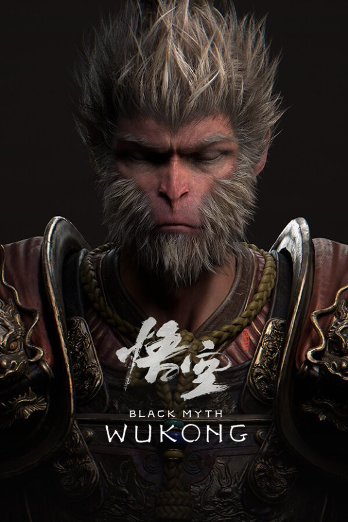

Información del juego
Black Myth: Wukong es un épico juego de acción y aventuras inspirado en la clásica novela china "Viaje al Oeste". Encarna al Rey Mono, Sun Wukong, y domina sus habilidades únicas para enfrentarte a criaturas mitológicas en un mundo lleno de magia y peligros. Con combates desafiantes y una narrativa envolvente, este título promete una experiencia inolvidable.
| Desarrollador | Game Science |
|---|---|
| Género | Acción/Aventura / Soulslike |
| Lanzamiento | 20 de agosto de 2024 |
| Plataformas | PS5, Xbox Series X/S, PC |
| Clasificación | PEGI 16 |
| Modos | Un jugador |
$23,990
 4.8/5 (previo al lanzamiento)
4.8/5 (previo al lanzamiento)
Reservar
4.8/5 (previo al lanzamiento)
Características principales
- Combate hábil basado en las habilidades del Rey Mono
- Mundo inspirado en la mitología china con gráficos impresionantes
- Sistema de transformaciones y poderes únicos
- Jefes épicos y criaturas legendarias
- Narrativa profunda basada en "Viaje al Oeste"
- Optimizado para 4K y 60fps en consolas de nueva generación